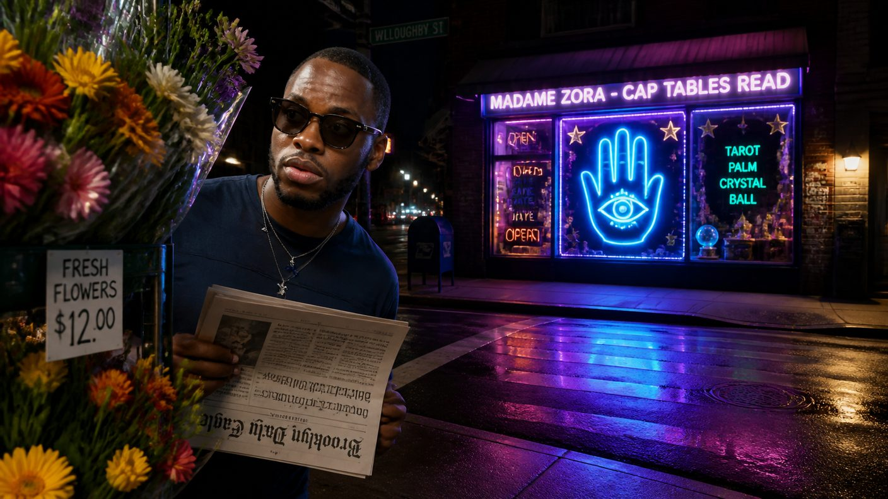
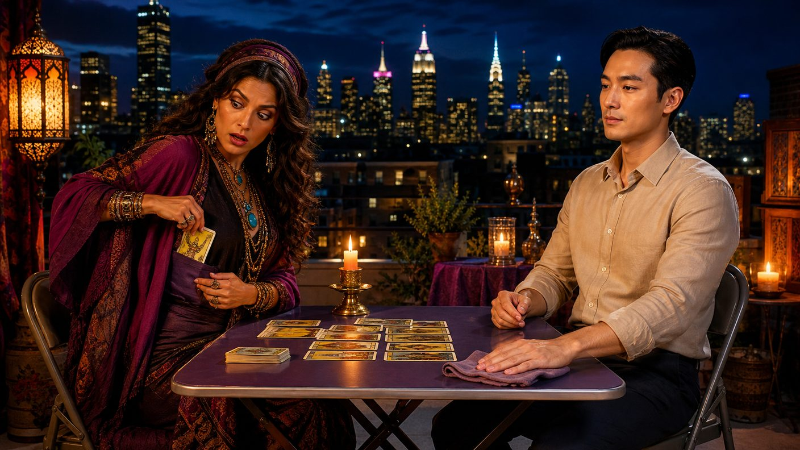

Saturday, September 5, 2026 - Day 2 of the slop era
Kenny and the Card That Was Not for Tonight
Previously, on the longest week in recorded Brooklyn history:
Kenny turned twenty-five. His frontal lobe is "developed." The group chat has screenshots and is holding him to it.
Madame Zora — the psychic on Bedford who reads cap tables — pocketed the final card of his birthday reading. "Not for tonight," she said, and refused to elaborate.
The shrooms are scheduled. By Kenny. Who is never on time.
Kenny woke on his second day of being twenty-five and meditated in full — twenty minutes, eyes closed, the app voice murmuring about impermanence, which is honestly rich coming from an app that sends streak notifications. Then he checked Slack before his feet touched the floor. Day two. The lobe was holding.
The problem arrived with the second coffee: the card. The pocketed card. Zora had looked at the last card of his birthday reading, slid it into her pocket, and declared it not for tonight, and Kenny — who believes himself fluent in the mysteries — had now spent fourteen hours not knowing. He refreshed her booking page the way other men refresh the score. Fully booked. By the skeptics. Again. His own friends had pre-emptively monopolized the psychic, which, if not a betrayal, was at least betrayal-adjacent.

The operative's handler surveils the psychic economy (artist's rendering)
So he called an emergency session at Grindhouse, because Kenny processes things in exactly one of three places — the gym, the group chat, or whatever room currently contains Milo. The plan he arrived with was already doomed in the customary way: he would book a reading under a false name, sit in the candlelight, and ask about "a friend" whose card had been pocketed. David offered to attend in a disguise he described as "a guy from Boston," which everyone agreed was not a disguise so much as a second, worse David. Lea pointed out that Zora had held Kenny's actual palm for forty minutes and would know him on sight, disguised or not, because — and she said this with love — psychic.
The final plan was worse. The final plan was Milo.
It made sense, if you squinted. Milo is the perfect operative: a man Zora had never met, whose energy gives nothing away, whose silences have silences. Kenny briefed him for forty-five minutes, with a whiteboard. Milo listened, wiped down the shaker bottle Kenny had been drinking from, and said one sentence — "I'll go at seven" — the most complete sentence Milo had produced all month. Historic. A plaque is being discussed.
Zora received Milo at dusk, on the rooftop she still refuses to explain. One candle. One folding table. The tablecloth, which at this point has seen more than the group chat. She took his palm and went still — a different stillness, the candle confirms, sharper than her usual kind. "You speak very little," she said. Milo nodded. "You have already finished something your friends have not started." Milo cleaned the folding table. Zora watched him for a long moment, then slid a card into her pocket without showing it to anyone — the second pocketed card of the week — and said: "Tell Kenny the first one is still not for tonight. It will show itself when the streak breaks."

Zora pockets the second card of the week; Milo gives nothing away
Milo returned at 9:40. The debrief was held on a rooftop, because yesterday's debrief was held on a rooftop and the group respects tradition exactly that much. Milo's full report: "She pockets fast." He then asked if anyone wanted to play pool. Defne declined. Both halves of the ritual are sacred.
"She pocketed ANOTHER one," Kenny said. "That's not a reading. That's a series."
"Two cards in the pocket is a pattern," David said. "The woman is building a portfolio."
"You're in a franchise now," Lea said. "The first card is the prequel."
"The table is clean," said Milo, about Zora's table, or possibly the universe.
Sitting with not knowing (streak day forty-two)
Kenny is taking it well, by which the narrator means he scheduled a forty-minute meditation titled "sitting with not knowing" and checked Slack twice during it. He is also — and the group chat is being extremely normal about this, which is to say not normal at all — afraid of his own streak now. Forty-two days. If the card shows itself when the streak breaks, then the streak is the seal on the envelope, and Kenny has never once, in his entire developed life, left a seal alone.
So: the cards remain pocketed (now two, which everyone agrees is somehow worse). The lobe remains developed (unverified; screenshots exist). The shrooms remain scheduled by Kenny — though Zora, asked about it at the night's last appointment, allowed that "some things arrive exactly when they are supposed to, which for Kenny would be a first".
The narrator does not believe in prophecy. The narrator believes in booking pages, and Zora's is full through October. Honestly, whatever the neighborhood is becoming, it is becoming it on a rooftop, one pocketed card at a time.
written with 100% organic, free-range slop. no cards were revealed in the making of this episode